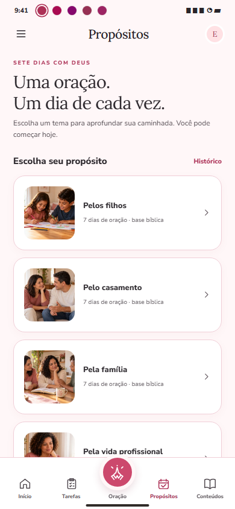
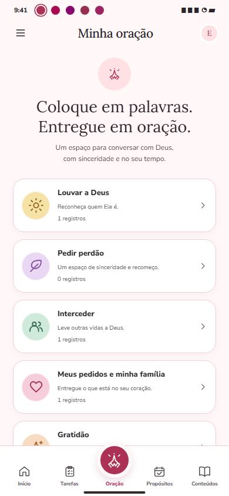
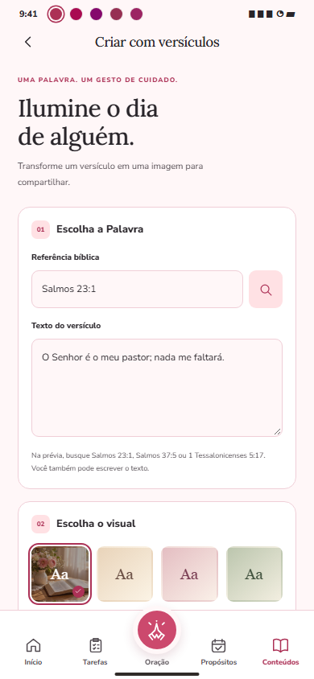

Uma palavra para o seu dia.
Reflexões para aproximar a fé da rotina. Guarde suas favoritas e transforme uma atitude prática em uma tarefa do dia.
Entre tantas coisas para fazer, também existe um espaço para respirar, orar e cuidar do seu coração.
O Devocional Amigas de Jesus acompanha você com reflexões, oração e pequenos passos de fé na vida real.
Na família, no trabalho, nos recomeços e nos dias comuns. O Amigas de Jesus é um convite para levar Deus para perto de tudo o que você vive.
Um lugar no seu celular para encontrar uma reflexão, registrar o que está no coração e continuar a caminhada no seu ritmo.
Encontre o seu próximo passoReflexões para aproximar a fé da rotina. Guarde suas favoritas e transforme uma atitude prática em uma tarefa do dia.
Organize seus motivos em um caderno de oração. Registre pedidos e marque os momentos em que você orou por eles.
Cuide das pequenas atitudes, acompanhe suas tarefas e reconheça como você está se sentindo hoje.

Escolha um tema que converse com o seu momento e percorra uma jornada de sete dias, com leitura, oração e uma atitude para praticar.
Família, filhos, casamento e outros temas da sua caminhada.
Leia, reflita e conclua cada etapa no seu tempo.
Acompanhe seu progresso e o histórico de jornadas concluídas.
Imagem ilustrativa do protótipo. A aparência final pode mudar.
Conheça um pouco da experiência que estamos preparando.


Prévias ilustrativas do protótipo, com conteúdo demonstrativo. Não são capturas da versão publicada.
Ajuste o tamanho da leitura, escolha uma das três paletas e, se desejar, ative um lembrete para sua pausa com Deus.
Fé na vida real.
Companhia na caminhada.
Algumas respostas para conhecer melhor o Amigas de Jesus.
Converse com a gente ↗O Devocional Amigas de Jesus está em preparação para Android. Quando o lançamento acontecer, esta página será atualizada com o link oficial da Google Play.
Na versão atual em desenvolvimento, não há cadastro nem login. Você usa os recursos no próprio aparelho.
Você escolhe um tema e acompanha uma jornada de sete dias. Depois de concluir uma etapa, a próxima fica disponível no dia seguinte. Se precisar fazer uma pausa, seu progresso permanece guardado.
Seus registros ficam no aparelho, sem um servidor de contas da OBA.Apps. O backup do Android depende das configurações do dispositivo. Você encontra mais informações na Política de Privacidade.
Sim. Os lembretes são opcionais e podem ser ativados ou desativados nas configurações. O app agenda no máximo um lembrete por dia, de acordo com o período escolhido e a permissão do Android.
Sim, uma assinatura Premium está prevista. Planos, preços e benefícios ainda serão definidos. Não há assinatura ou compra disponível na versão atual em desenvolvimento.
O app permite preparar artes de versículos, guardar uma imagem e escolher onde salvar ou com quem compartilhar pelo menu do Android.
Para sugestões, suporte ou assuntos de privacidade, fale com a OBA.Apps.